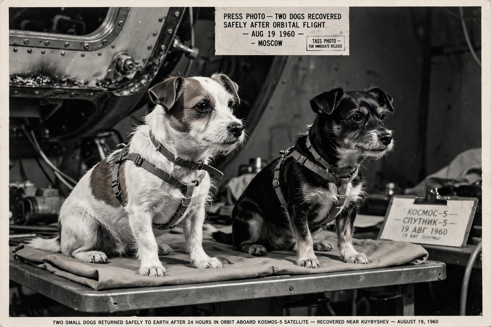

Animals in space
From Wikipedia, the free encyclopedia
| Animals in space | |
|---|---|
| First animals | Fruit flies (1947, US V-2 rocket) |
| First dog in orbit | Laika (1957) |
| First to return alive from orbit | Belka and Strelka (1960) |

Belka and Strelka, home safe.Animals in space preceded humans: before risking people, the early programmes sent fruit flies, mice, monkeys, dogs, cats, tortoises and many other species aloft to learn whether living things could survive launch, weightlessness and radiation. The first animals in space were fruit flies aboard an American-captured V-2 rocket in February 1947, returned alive; the first mammal to orbit Earth was the Soviet dog Laika in November 1957, who did not survive.
The Soviet dog programme — chosen for the animals' calm temperaments, using Moscow strays — culminated in Belka and Strelka's safe return in August 1960, the proof that orbit and back was survivable, which cleared Yuri Gagarin's path. American primates Ham the chimpanzee (1961) and Enos (the only chimp to orbit, 1961) similarly rehearsed Mercury. Soviet tortoises aboard Zond 5 became, in September 1968, the first Earth life to circle the Moon and return.
Ethics and legacy
The animal flights are now viewed with ambivalence — scientifically foundational (and the dogs were genuinely beloved by their handlers; Oleg Gazenko later said 'the more time passes, the more I'm sorry' about Laika) but conducted to standards no modern ethics board would pass. Animals still fly today, as laboratory subjects on the International Space Station; the heroic age of animal pathfinders closed when the data said humans could go.
See also
Laika · V-2 rocket · Yuri Gagarin · Sputnik 2